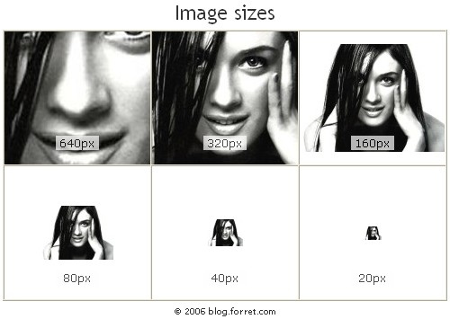

Image Interpolation
Objective
Image interpolation addresses the problem of generating a high-resolution image from its given low-resolution image. Image interpolation is required for multi resolution pyramidal coding, improved definition television receiver design, still photograph zooming and other more general needs for image resolution enhancement. Image interpolation is beneficial and in some cases even necessary in computer vision, surveillance, medical imaging, remote sensing, and other fields Image Source : http://blog.forret.com/2006/08/how-to-upsize-an-image/Publication
Sunil Prasad Jaiswal, Vinit Jakhetiya, Anil K. Tiwari "An Efficient Image Interpolation Algorithm Based Upon the Switching and Self Learned Characteristics for Natural Images ," Circuits and Systems (ISCAS), 2011 IEEE International Symposium on , vol., no., pp.861,864, 15-18 May 2011 doi: 10.1109/ISCAS.2011.5937702 [paper], [Source Code]
Sunil Prasad Jaiswal, Vinit Jakhetiya, Ayush Kumar, Anil K. Tiwari "A Low Complex Context Adaptive Image Interpolation Algorithm For Real-Time Applications ," Instrumentation and Measurement Technology Conference (I2MTC), 2012 IEEE International , vol., no., pp.969,972, 13-16 May 2012 doi: 10.1109/I2MTC.2012.6229348 [paper],[Source Code]
References
[1]Xin Li and Michael T. Orchard “New Edge-Directed Interpolation,” in IEEE Transaction On Image Processing, Vol. 10, No. 10, October 2001. [2] Vinit Jakhetiya and Anil K. Tiwari, “A Survey on image interpolation methods,” in International Conference on Digital Image Processing, 2010 [3] Lei Zhang and Xiaolin Wu “An Edge-Guided Image Interpolation Algo- rithm via Directional Filtering and Data Fusion,” in IEEE Transaction On Image Processing, Vol. 15, No. 8, August 2006. [4] Xiangjun Zhang and Xiaolin Wu “Image Interpolation by Adaptive 2- D Autoregressive Modeling and Soft-Decision Estimation,” in IEEE Transaction On Image Processing, Vol. 17, No. 6, June 2008. [5] Tinku Acharya and Ping-Sing Tsai, “Computational Foundations of Image Interpolation Algorithms,”. in ACM Ubiquity Vol. 8, 2007 [6] Vinit Jakhetiya and Anil K. Tiwari, “Image interpolation by adaptive 2 -D autoregressive modeling,”. in International Conference on Digital Image Processing, 2010